Last updated: 2023-08-24
Checks: 6 1
Knit directory: 2023_MPSIII_salbutamol/
This reproducible R Markdown analysis was created with workflowr (version 1.7.0). The Checks tab describes the reproducibility checks that were applied when the results were created. The Past versions tab lists the development history.
The R Markdown is untracked by Git. To know which version of the R Markdown file created these results, you’ll want to first commit it to the Git repo. If you’re still working on the analysis, you can ignore this warning. When you’re finished, you can run wflow_publish to commit the R Markdown file and build the HTML.
Great job! The global environment was empty. Objects defined in the global environment can affect the analysis in your R Markdown file in unknown ways. For reproduciblity it’s best to always run the code in an empty environment.
The command set.seed(20230614) was run prior to running the code in the R Markdown file. Setting a seed ensures that any results that rely on randomness, e.g. subsampling or permutations, are reproducible.
Great job! Recording the operating system, R version, and package versions is critical for reproducibility.
Nice! There were no cached chunks for this analysis, so you can be confident that you successfully produced the results during this run.
Great job! Using relative paths to the files within your workflowr project makes it easier to run your code on other machines.
Great! You are using Git for version control. Tracking code development and connecting the code version to the results is critical for reproducibility.
The results in this page were generated with repository version e7fb2e6. See the Past versions tab to see a history of the changes made to the R Markdown and HTML files.
Note that you need to be careful to ensure that all relevant files for the analysis have been committed to Git prior to generating the results (you can use wflow_publish or wflow_git_commit). workflowr only checks the R Markdown file, but you know if there are other scripts or data files that it depends on. Below is the status of the Git repository when the results were generated:
Ignored files:
Ignored: .DS_Store
Ignored: .Rhistory
Ignored: .Rproj.user/
Ignored: code/.DS_Store
Ignored: data/.DS_Store
Ignored: data/exp1.2/.DS_Store
Ignored: data/exp1.2/raw_data/.DS_Store
Ignored: data/exp1.2/raw_data/distances/.DS_Store
Ignored: data/exp1.2/raw_data/zones/.DS_Store
Ignored: data/exp1.2/videos/
Ignored: data/exp1/.DS_Store
Ignored: data/exp1/processed_data/.DS_Store
Ignored: data/exp1/raw_data/.DS_Store
Ignored: data/exp1/videos/
Ignored: data/pilot/.DS_Store
Ignored: data/pilot/14 days/.DS_Store
Ignored: data/pilot/14 days/raw_data/.DS_Store
Ignored: data/pilot/7 days/.DS_Store
Ignored: data/pilot/7 days/raw_data/.DS_Store
Ignored: data/pilot/7 days/raw_data/distances/.DS_Store
Ignored: data/pilot/7 days/tracking_videos/
Untracked files:
Untracked: analysis/fullexp1-2.rmd
Untracked: code/experiment 1.2/
Untracked: code/experiment 1/distances_exp1.2.R
Untracked: code/plotMaking.R
Untracked: data/R_objects/
Untracked: data/exp1.2/processed_data/
Untracked: data/exp1.2/~$2023_Aug18_salbutamolexp1_2_meta.xlsx
Untracked: output/plots/
Unstaged changes:
Modified: .gitignore
Modified: analysis/fullexp1.rmd
Modified: data/exp1.2/2023_Aug18_salbutamolexp1_2_meta.xlsx
Modified: data/exp1.2/metadata_withGenotype.rds
Deleted: data/exp1.2/raw_data/distances/ymaze_inLT-20230818T102151-data_totals.csv
Deleted: data/exp1.2/raw_data/distances/ymazeinLT-20230818T095428-data_totals.csv
Deleted: data/exp1.2/raw_data/distances/ymazeinLT-20230818T095643-data_totals.csv
Deleted: data/exp1.2/raw_data/distances/ymazeinLT-20230818T164213-data_totals.csv
Deleted: data/exp1.2/raw_data/distances/ymazeinLT-20230818T164447-data_totals.csv
Deleted: data/exp1.2/raw_data/zones/ymaze8-20230818T095443.csv
Deleted: data/exp1.2/raw_data/zones/ymaze_inLT-20230818T102150.csv
Deleted: data/exp1.2/raw_data/zones/ymazeinLT-20230818T095427.csv
Deleted: data/exp1.2/raw_data/zones/ymazeinLT-20230818T095643.csv
Deleted: data/exp1.2/raw_data/zones/ymazeinLT-20230818T164213.csv
Deleted: data/exp1.2/raw_data/zones/ymazeinLT-20230818T164446.csv
Note that any generated files, e.g. HTML, png, CSS, etc., are not included in this status report because it is ok for generated content to have uncommitted changes.
There are no past versions. Publish this analysis with wflow_publish() to start tracking its development.
library(tidyverse)
library(readxl)
library(here)
library(magrittr)
library(scales)
library(readxl)
library(ggpubr)
library(ggeasy)
library(ggfortify)
library(ggbeeswarm)
library(ggforce)
library(ggrepel)
library(kableExtra)
# stat analysis
library(broom)
library(lme4)
library(performance)
library(car)
library(emmeans)
library(glmmTMB)
library(MASS)
# set the default theme for ggplot as theme_bw
theme_set(theme_classic())In this experiment, i treated equal roughly numbers of male and female fish with and without 20 uM of salbutamol. Then, they were subjected to the FMP ymaze test. Then, theu were put back in their treatment groups and left off treatment for 1 month.
Then, I had another behaviour test to see whether there is a lasting effect of the drug, or whether it dropped off. # genotyping summary
The genotying data was properly analysed in a seperate R script code / experiment 1/ exp1.2_genotypingMeltCurve.R. However, the results are shown here.
read_rds("data/exp1.2/genotyping_data/meltcurveWithGenotypes.rds") %>%
ggplot(aes(x = Temperature, y = dF)) +
geom_line(aes(group = Position,
colour = inferredGenotype)) +
scale_x_continuous(limits = c(78,86),
breaks = seq(70,90)) +
scale_y_continuous(labels = comma,
limits = c(0, 280000)) 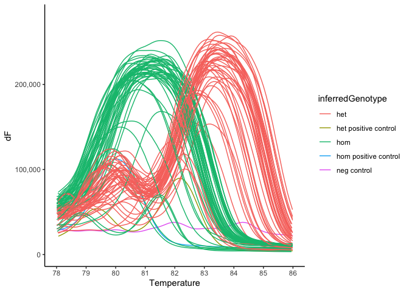
The following plot shows the number of fish per genotype.
meta <- readRDS("data/exp1.2/metadata_withGenotype.rds")meta %>%
ggplot(aes(x = treatment, fill = genotype)) +
geom_bar(position = "dodge") +
scale_y_continuous(breaks = seq(1,26))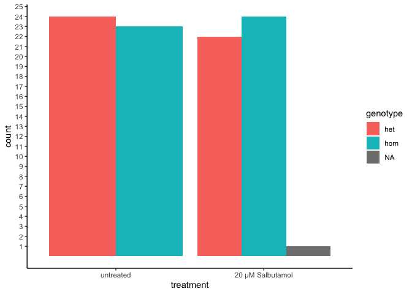 Also number of fish per genotype and sex
meta %>%
ggplot(aes(x = treatment, fill = genotype)) +
geom_bar(position = "dodge") +
facet_wrap(~sex) +
scale_y_continuous(breaks = seq(1,26))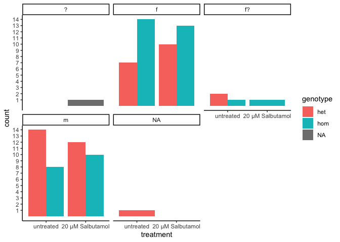
A couple of fish I wasnt sure about the sex. I’ll just omit them
# save the fish_ids for later
fish2omit <- meta %>%
dplyr::filter(sex == "f?") %>%
.$fish_idfinal_data <- read_csv("data/exp1.2/processed_data/final_output.csv") %>%
dplyr::select(-1) %>%
mutate(fish_id = as.character(fish_id)) %>%
left_join(meta) %>%
dplyr::filter(genotype %in% c("het", "hom"),
sex %in% c("m", "f"))
# make an object which converts the final data to long format. for easier plotting in ggplot
final_data_long <- final_data %>%
gather(key = "tetras", value = "Count", # convert to long format
grep("[L|R]{4}",
colnames(.))
)
# also make an object which sums the tetragrams over the hour
final_data_summedoverbins <- final_data %>%
gather(key = "tetras", value = "Count", # convert to long format
grep("[L|R]{4}", # select the columns which contain a L or a R four times
colnames(.))
) %>%
group_by(fish_id, tetras) %>%
mutate(x = sum(Count)) %>% # sum the tetragram counts per fish_id
dplyr::select(colnames(meta), tetras, x) %>%
unique
distancess <- read_rds("data/exp1.2/processed_data/distanceDataexp1-2.rds")
# 6 min bins
bin_df <- tibble(
# 10 min buins
bins6 = c(rep(1, 600),
rep(2, 600),
rep(3, 600),
rep(4, 600),
rep(5, 600),
rep(6, 600)
) %>% as.factor(),
BIN_NUM = distancess$BIN_NUM %>% unique)First need to have a look at whether tracking worked nicely for these fish. To do this, I will import the distance data and plot it out. I also have the videos saved to double check anything strange.
distancess %>%
left_join(bin_df) %>%
group_by(fish_id, bins6) %>%
mutate(total_distance = sum(TOTAL_DISTANCE_IN_ZONE)) %>%
dplyr::distinct(bins6, .keep_all = T) %>%
dplyr::filter(genotype %in% c('het', 'hom'),
sex %in% c("m", "f")) %>%
ggplot(aes(x = bins6, y = total_distance)) +
geom_jitter(alpha = 0.75) +
geom_boxplot(aes(x = bins6),
fill = NA) +
geom_label(aes(label = fish_id),
data = . %>%
dplyr::filter(total_distance > 25000))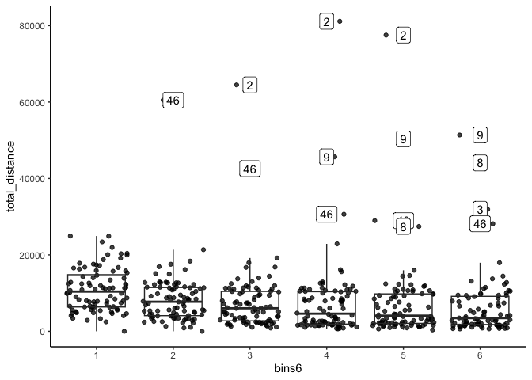
fish2omit2 <- c(fish2omit, 2, 3,46, 8, 9)distancess %>%
left_join(bin_df) %>%
group_by(fish_id, bins6) %>%
mutate(total_distance = sum(TOTAL_DISTANCE_IN_ZONE)) %>%
dplyr::distinct(bins6, .keep_all = T) %>%
dplyr::filter(genotype %in% c('het', 'hom'),
sex %in% c("m", "f")) %>%
dplyr::filter(!fish_id %in% fish2omit2 ) %>%
ggplot(aes(x = bins6, y = total_distance)) +
geom_jitter(alpha = 0.75) +
geom_boxplot(aes(x = bins6),
fill = NA) +
geom_label(aes(label = fish_id),
data = . %>%
dplyr::filter(total_distance > 25000))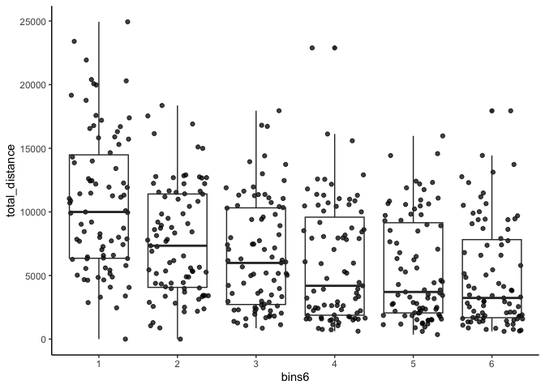
fish2omit3 <-
c(
fish2omit2,
meta %>%
dplyr::filter(sex == "f?") %>% .$fish_id,
4, 23, 76, 6,5
)
distancess %<>%
dplyr::filter(!(fish_id %in% fish2omit3))
final_data %<>%
dplyr::filter(!(fish_id %in% fish2omit3))
final_data_long %<>%
dplyr::filter(!(fish_id %in% fish2omit3))
final_data_summedoverbins %<>%
dplyr::filter(!(fish_id %in% fish2omit3))Fish were tested across a whole day (from ~10am to 5pm) so circadian differences could be present here. Plot out total distance by trial. Trial specific effects are seen, but no clear pattern.
distancess %>%
left_join(bin_df) %>%
group_by(fish_id) %>%
mutate(total_distance = sum(TOTAL_DISTANCE_IN_ZONE)) %>%
dplyr::distinct(fish_id, .keep_all = T) %>%
dplyr::filter(!is.na(behavBatch)) %>%
ggplot(aes(y = total_distance,
x = bins6)) +
geom_jitter(alpha = 0.75) +
geom_boxplot(fill = NA) +
scale_y_continuous(labels = comma) +
facet_wrap(~behavBatch, scales = "free_x", nrow = 1)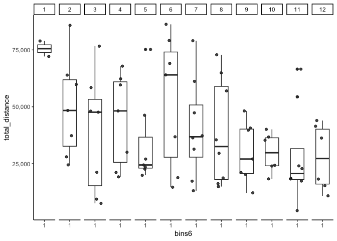
fit.dists <-
distancess %>%
left_join(bin_df) %>%
group_by(fish_id, bins6) %>%
mutate(total_distance = sum(TOTAL_DISTANCE_IN_ZONE)) %>%
dplyr::distinct(bins6, .keep_all = T) %>%
lmer(total_distance ~ (genotype*treatment*bins6*sex) + (1|behavBatch) +(1|fish_id),
data = .)
# check assumptions
# all look ok
check_model(fit.dists)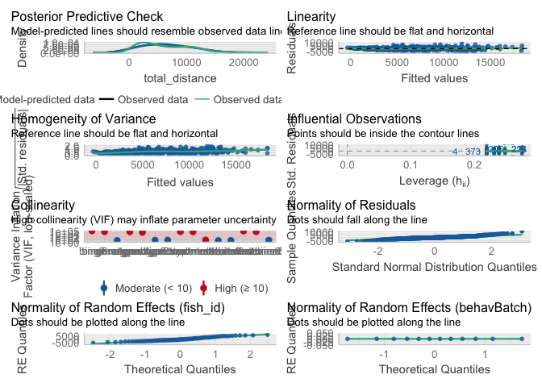
an <- Anova(fit.dists)
emmeans(fit.dists, list(pairwise ~ genotype * treatment), adjust = "tukey")$`emmeans of genotype, treatment`
genotype treatment emmean SE df lower.CL upper.CL
het untreated 6754 864 57.2 5025 8484
hom untreated 6414 892 56.5 4627 8202
het 20 µM Salbutamol 7499 828 53.1 5838 9160
hom 20 µM Salbutamol 5300 824 54.9 3649 6951
Results are averaged over the levels of: bins6, sex
Degrees-of-freedom method: kenward-roger
Confidence level used: 0.95
$`pairwise differences of genotype, treatment`
1 estimate SE df t.ratio p.value
het untreated - hom untreated 340 1252 69.5 0.272 0.9929
het untreated - het 20 µM Salbutamol -745 1201 68.6 -0.620 0.9254
het untreated - hom 20 µM Salbutamol 1454 1192 66.2 1.220 0.6165
hom untreated - het 20 µM Salbutamol -1085 1207 62.8 -0.899 0.8054
hom untreated - hom 20 µM Salbutamol 1114 1219 68.8 0.914 0.7976
het 20 µM Salbutamol - hom 20 µM Salbutamol 2199 1179 69.4 1.866 0.2523
Results are averaged over the levels of: bins6, sex
Degrees-of-freedom method: kenward-roger
P value adjustment: tukey method for comparing a family of 4 estimates # geno treat sex
print(emmeans(fit.dists, ~ genotype * treatment * sex), type = "response") %>%
as_tibble() %>%
ggplot(aes(x = treatment, y = emmean, colour = genotype)) +
geom_col(aes(fill = genotype),
alpha = 0.75,
width = 0.75,
position = position_dodge(width = 0.75)) +
geom_errorbar(aes(ymin = lower.CL, ymax = upper.CL),
width = 0.5,
position = position_dodge(width = 0.75)) +
facet_wrap(~sex, nrow = 1) genotype treatment sex emmean SE df lower.CL upper.CL
het untreated f 5780 1409 64.7 2965 8595
hom untreated f 6115 1115 65.0 3887 8342
het 20 µM Salbutamol f 8395 1235 66.5 5930 10860
hom 20 µM Salbutamol f 5292 1171 67.0 2955 7629
het untreated m 7729 1024 64.0 5684 9774
hom untreated m 6714 1436 54.0 3834 9593
het 20 µM Salbutamol m 6603 1117 65.0 4372 8834
hom 20 µM Salbutamol m 5308 1182 60.8 2944 7672
Results are averaged over the levels of: bins6
Degrees-of-freedom method: kenward-roger
Confidence level used: 0.95 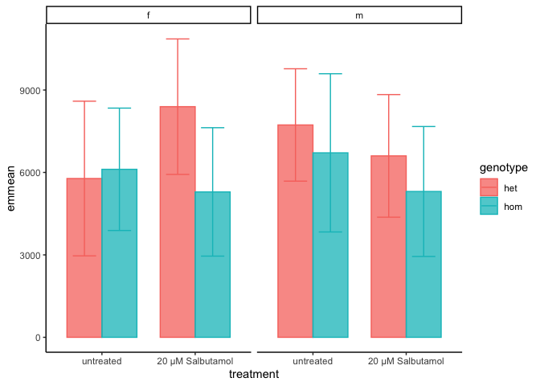
# geno treat
print(emmeans(fit.dists, ~ genotype * treatment), type = "response") %>%
as_tibble() %>%
ggplot(aes(x = treatment, y = emmean/100, colour = genotype)) +
geom_col(aes(fill = genotype),
alpha = 0.75,
position = position_dodge()) +
geom_errorbar(aes(ymin = lower.CL/100, ymax = upper.CL/100),
position = position_dodge()) +
facet_wrap(~treatment, nrow = 1, scales = "free_x") +
labs(title = "1 month after 7days on salbutamol",
y = "Average distance travelled\nper 10 min bin (cm)") genotype treatment emmean SE df lower.CL upper.CL
het untreated 6754 864 57.2 5025 8484
hom untreated 6414 892 56.5 4627 8202
het 20 µM Salbutamol 7499 828 53.1 5838 9160
hom 20 µM Salbutamol 5300 824 54.9 3649 6951
Results are averaged over the levels of: bins6, sex
Degrees-of-freedom method: kenward-roger
Confidence level used: 0.95 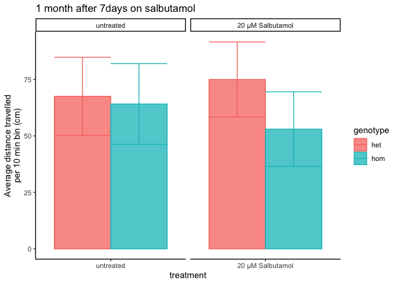
# geno treat bin
print(emmeans(fit.dists, ~ genotype * treatment * bins6 * sex),
type = "response") %>%
as_tibble() %>%
mutate(group = paste0(genotype, "_",
treatment, "_",
sex),
genotreat = paste0(genotype, "_", treatment)) %>%
dplyr::filter(genotreat != "het_20 µM Salbutamol") %>%
ggplot(aes(x = bins6, y = emmean, colour = genotreat)) +
geom_point(aes(fill =group),
alpha = 0.75,
position = position_dodge(width = 0.75)) +
geom_errorbar(aes(ymin = lower.CL, ymax = upper.CL),
position = position_dodge(0.75)) +
geom_line(aes(group = group),
position = position_dodge(0.75),
show.legend = F) +
facet_wrap(~sex,
scales = "free_x") genotype treatment bins6 sex emmean SE df lower.CL upper.CL
het untreated 1 f 9225 1635 117.5 5987 12463
hom untreated 1 f 8467 1297 118.2 5899 11035
het 20 µM Salbutamol 1 f 10213 1435 120.7 7371 13054
hom 20 µM Salbutamol 1 f 8538 1361 121.7 5843 11232
het untreated 2 f 6554 1635 117.5 3316 9792
hom untreated 2 f 6723 1297 118.2 4155 9292
het 20 µM Salbutamol 2 f 9626 1435 120.7 6785 12468
hom 20 µM Salbutamol 2 f 6577 1361 121.7 3883 9271
het untreated 3 f 5221 1635 117.5 1983 8459
hom untreated 3 f 5822 1297 118.2 3254 8390
het 20 µM Salbutamol 3 f 8492 1435 120.7 5651 11333
hom 20 µM Salbutamol 3 f 5185 1361 121.7 2491 7879
het untreated 4 f 4708 1635 117.5 1470 7946
hom untreated 4 f 5502 1297 118.2 2934 8070
het 20 µM Salbutamol 4 f 8096 1435 120.7 5255 10937
hom 20 µM Salbutamol 4 f 3899 1361 121.7 1205 6593
het untreated 5 f 4678 1635 117.5 1440 7916
hom untreated 5 f 5318 1297 118.2 2750 7886
het 20 µM Salbutamol 5 f 6933 1435 120.7 4092 9774
hom 20 µM Salbutamol 5 f 4042 1361 121.7 1347 6736
het untreated 6 f 4294 1635 117.5 1056 7532
hom untreated 6 f 4854 1297 118.2 2286 7422
het 20 µM Salbutamol 6 f 7009 1435 120.7 4168 9851
hom 20 µM Salbutamol 6 f 3513 1361 121.7 819 6208
het untreated 1 m 13309 1191 116.3 10950 15668
hom untreated 1 m 10629 1658 98.6 7338 13920
het 20 µM Salbutamol 1 m 11270 1298 118.2 8699 13841
hom 20 µM Salbutamol 1 m 9893 1371 110.6 7177 12610
het untreated 2 m 8113 1191 116.3 5754 10472
hom untreated 2 m 7941 1658 98.6 4650 11232
het 20 µM Salbutamol 2 m 7565 1298 118.2 4994 10136
hom 20 µM Salbutamol 2 m 6659 1371 110.6 3943 9376
het untreated 3 m 6869 1191 116.3 4511 9228
hom untreated 3 m 7410 1658 98.6 4119 10701
het 20 µM Salbutamol 3 m 6677 1298 118.2 4106 9248
hom 20 µM Salbutamol 3 m 4320 1371 110.6 1604 7036
het untreated 4 m 6909 1191 116.3 4550 9268
hom untreated 4 m 5056 1658 98.6 1766 8347
het 20 µM Salbutamol 4 m 5276 1298 118.2 2705 7847
hom 20 µM Salbutamol 4 m 3898 1371 110.6 1181 6614
het untreated 5 m 5616 1191 116.3 3257 7975
hom untreated 5 m 4914 1658 98.6 1623 8205
het 20 µM Salbutamol 5 m 5065 1298 118.2 2494 7636
hom 20 µM Salbutamol 5 m 3668 1371 110.6 952 6384
het untreated 6 m 5557 1191 116.3 3198 7916
hom untreated 6 m 4332 1658 98.6 1041 7623
het 20 µM Salbutamol 6 m 3765 1298 118.2 1194 6336
hom 20 µM Salbutamol 6 m 3409 1371 110.6 693 6125
Degrees-of-freedom method: kenward-roger
Confidence level used: 0.95 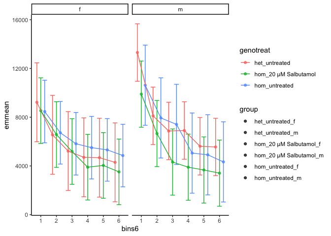
Fontana et al. (https://doi.org/10.1007/s10071-019-01296-9, Matt Parker’s group) showed that fish sometimes show a behavioural lateralisation (i.e. handedness). If fish show this, then they would perform less alternation tetragrams not due to working memory. The plot below circles each of the L_R bias groups.
# make the LR bias object
LR_Bias <- final_data %>%
dplyr::select(L, R, total_turns, fish_id) %>%
group_by(fish_id) %>%
mutate(L = sum(L),
R = sum(R),
total_turns = sum(total_turns),
L_R_bias = case_when( #consider more than 60% of the time performing a left or right turn to be a bias
L/total_turns > 0.6 ~ "Left",
R/total_turns > 0.6 ~ "Right",
TRUE ~ "Neither"
)) %>%
dplyr::select(fish_id, L_R_bias) %>%
unique() %>%
mutate(L_R_bias = factor(L_R_bias,
levels = c("Neither", "Left", "Right"))
)The overall propotions of fish showing left, right or no bias is simialr across the 4 experimental groups.
final_data %>%
left_join(LR_Bias) %>%
group_by(fish_id) %>%
mutate(L = sum(L),
R = sum(R),
total_turns = sum(total_turns),
genotreat = paste0(genotype, "_", treatment)
) %>%
ggplot(aes(x = genotreat, fill = L_R_bias )) +
geom_bar()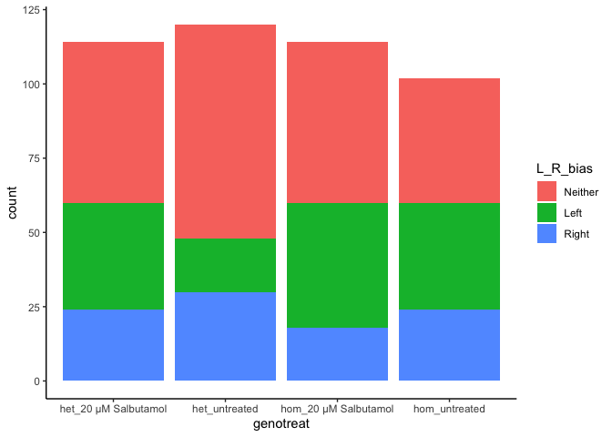
# add the LR bias object to final data
final_data %<>%
left_join(LR_Bias) Cleal et al. showed that zebrafish naturally perform more of the alternation tetragrams (LRLR and RLRL) in a Y-maze. Here, we actually see more reps that alts. I will look at this more closely later.
final_data_summedoverbins %>%
dplyr::distinct(x, .keep_all = T) %>%
ggplot(aes(x = tetras, y = x)) +
geom_jitter(aes(colour = tetras,
shape = sex)) +
geom_boxplot(outlier.shape = NA,
fill = NA
) +
scale_fill_viridis_d() +
labs(y = "Number of tetragrams",
colour = "Tetragram",
x = "Tetragram")+
theme(legend.position = "bottom") +
ggtitle("Total number of 16 possible tetragrams performed by zebrafish in a Y-maze\nduring a 1 hour search period") +
geom_label_repel(aes(label = fish_id),
data = . %>%
dplyr::filter(x > 200))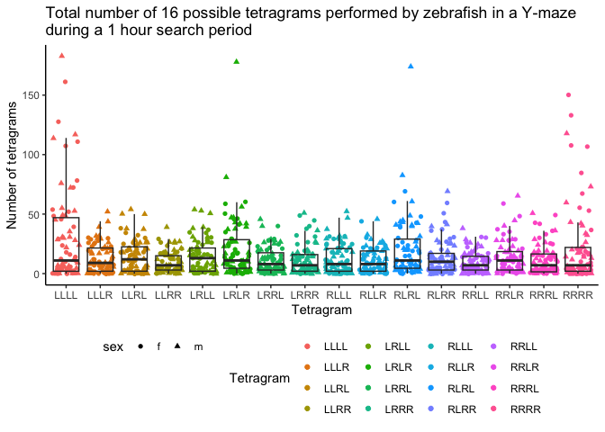
We can also overlay the genotype boxplots as shown below. Looks like the heterozyous and homozygous fish perform more alternations than the WT fish. I will look into this more later in the analysis
final_data_summedoverbins %>%
ggplot(aes(x = tetras, y = x)) +
geom_jitter(aes(colour = tetras,
shape = sex)) +
geom_boxplot(outlier.shape = NA,
aes(fill = genotype),
alpha = 0.5,
) +
scale_fill_viridis_d() +
labs(y = "Number of tetragrams",
colour = "Tetragram",
x = "Tetragram")+
theme(legend.position = "bottom") +
facet_wrap(~treatment, ncol = 1) +
easy_rotate_x_labels(angle = -45) +
annotate("rect", # add some boxes aeround the alts
xmin = 5.5, xmax = 6.5,
ymin = -1, ymax = 200,
alpha = 0, color= "red") +
annotate("rect",
xmin = 10.5, xmax = 11.5,
ymin = -1, ymax = 200,
alpha = 0, color= "red") +
ggtitle("Total number of 16 possible tetragrams performed by zebrafish in a Y-maze\nduring a 1 hour search period") 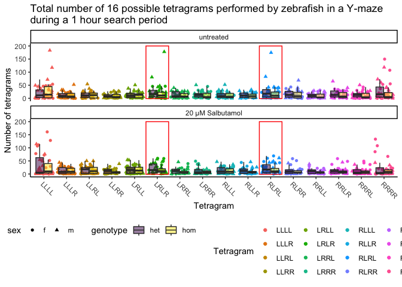 The alternation tetragrams are the tetragram of interest (the measure of working memory). Below indicates the number of tetragrams performed by zerbafish across the 6 x 10 min blocks of the hour they spent in the maze.
final_data_long %>%
dplyr::distinct(fish_id, bin, .keep_all = T) %>%
mutate(binforvis = case_when(
bin == 1 ~ "0-10 mins",
bin == 2 ~ "10-20 mins",
bin == 3 ~ "20-30 mins",
bin == 4 ~ "30-40 mins",
bin == 5 ~ "40-50 mins",
bin == 6 ~ "50-60 mins"
)) %>%
ggplot(aes(x = treatment, y = alts)) +
geom_boxplot(outlier.shape = NA,
aes(fill = genotype),
alpha = 0.5) +
geom_point(aes(colour = genotype),
position = position_jitterdodge()) +
facet_wrap(~binforvis, nrow = 1) +
theme(axis.text.x = element_text(angle = 45, hjust = 1, vjust = 1),
legend.position = "bottom") +
ylab("Frequency of alternation tetragrams (LRLR + RLRL)") +
scale_colour_viridis_d(end = 0.75) +
scale_fill_viridis_d(end = 0.75) 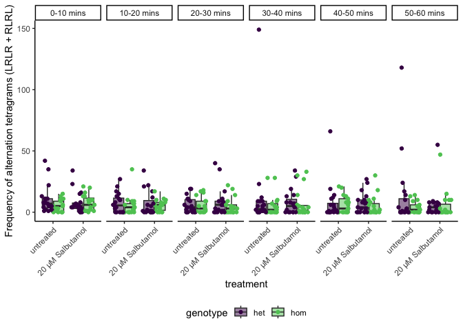 We can also display this as the relative amount of alternation tetragrams performed by zebrafish in a 1 hour search period. This will control for how active each fish is. Again, fish 18 and 24 looks like outliers.
final_data_long %>%
dplyr::distinct(fish_id, bin, .keep_all = T) %>%
mutate(binforvis = case_when(
bin == 1 ~ "0-10 mins",
bin == 2 ~ "10-20 mins",
bin == 3 ~ "20-30 mins",
bin == 4 ~ "30-40 mins",
bin == 5 ~ "40-50 mins",
bin == 6 ~ "50-60 mins"
)) %>%
ggplot(aes(x = treatment, y = rel_alts)) +
geom_boxplot(outlier.shape = NA,
aes(fill = genotype),
alpha = 0.5) +
geom_point(aes(colour = genotype),
position = position_jitterdodge()) +
facet_wrap(~binforvis, nrow = 1) +
theme(axis.text.x = element_text(angle = 45, hjust = 1, vjust = 1),
legend.position = "bottom") +
ylab("Relative number of alternation tetragrams\n(LRLR + RLRL) / total_turns") +
scale_colour_viridis_d(end = 0.75) +
scale_fill_viridis_d(end = 0.75) 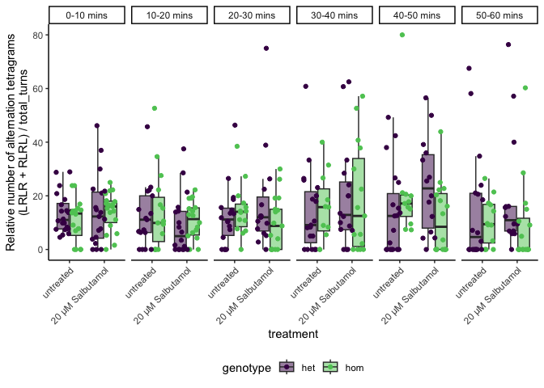 Finally, I will now test for alternation changes using a generalised linear mixed effect model (beta-binomial distribution). We use this because it is count data which is over-dispersed, and fixed and random effects are included. The link function is logit. No significant effects are observed on working memory. Only the L_R_bias term is significant, this is to be expected, as they would probably be performing more repitiions. The bin:Genotype effect is close (ish) to statistical significance. Meaning that this might have something there. but this does not take into account the Treatment group.
Note that I have ignored the effect of Sex here. We have never really seen a Sex effect in all of our ymaze analyses.
glm <-
final_data %>%
left_join(LR_Bias) %>%
mutate(
non_alts = total_turns - alts,
bin = as.factor(bin)
) %>%
glmmTMB(
cbind(alts, non_alts) ~ (bin + genotype + treatment + sex)^3 + L_R_bias + (1|behavBatch) + (1|fish_id),
family = betabinomial(),
data = .
)
Anova(glm) %>%
as.data.frame() %>%
dplyr::rename(pval = `Pr(>Chisq)`) %>%
kable() %>%
kable_styling(full_width = FALSE) %>%
row_spec(row = 4, bold = TRUE)| Chisq | Df | pval | |
|---|---|---|---|
| bin | 8.5986420 | 5 | 0.1261843 |
| genotype | 0.2242075 | 1 | 0.6358526 |
| treatment | 0.7158637 | 1 | 0.3975041 |
| sex | 2.2555233 | 1 | 0.1331384 |
| L_R_bias | 11.0795130 | 2 | 0.0039275 |
| bin:genotype | 4.4675294 | 5 | 0.4842396 |
| bin:treatment | 1.2822926 | 5 | 0.9367432 |
| bin:sex | 4.3181150 | 5 | 0.5045813 |
| genotype:treatment | 3.8393881 | 1 | 0.0500618 |
| genotype:sex | 1.9614981 | 1 | 0.1613532 |
| treatment:sex | 0.2758714 | 1 | 0.5994201 |
| bin:genotype:treatment | 7.4239720 | 5 | 0.1909695 |
| bin:genotype:sex | 6.2004068 | 5 | 0.2872041 |
| bin:treatment:sex | 0.9951470 | 5 | 0.9629562 |
| genotype:treatment:sex | 5.6264936 | 1 | 0.0176910 |
The effect of genotype x treatment is not too far off statistical significance (p = 0.17) and is trending towards a rescue.
print(emmeans(glm, ~ genotype * treatment * sex), type = "response") %>%
as_tibble() %>%
ggplot(aes(x = treatment, y = prob, colour = genotype)) +
geom_col(aes(fill = genotype),
alpha = 0.5,
width = 0.75,
position = position_dodge()) +
geom_errorbar(aes(ymin = asymp.LCL, ymax = asymp.UCL ),
width = 0.125,
size = 1,
position = position_dodge(width = 0.75)) +
facet_wrap(~sex ) +
theme(axis.text.x = element_text(hjust = 1,
vjust = 1,
angle = 45),
legend.position = "bottom") +
scale_color_viridis_d(end = 0.8, option = "inferno") +
scale_fill_viridis_d(end = 0.8, option = "inferno") +
labs(y = "Estimated probability of alternation\n(LRLR + RLRL)",
x = "genotype",
title = "GLM predicted probability of zebrafish performing an alternation\ntetragram due to Genotype and Treatment"
) genotype treatment sex prob SE df asymp.LCL asymp.UCL
het untreated f 0.0970 0.0196 Inf 0.0647 0.143
hom untreated f 0.1337 0.0218 Inf 0.0965 0.182
het 20 µM Salbutamol f 0.1887 0.0290 Inf 0.1384 0.252
hom 20 µM Salbutamol f 0.0883 0.0168 Inf 0.0604 0.127
het untreated m 0.1389 0.0200 Inf 0.1042 0.183
hom untreated m 0.1474 0.0327 Inf 0.0941 0.223
het 20 µM Salbutamol m 0.1461 0.0251 Inf 0.1034 0.203
hom 20 µM Salbutamol m 0.1610 0.0259 Inf 0.1165 0.218
Results are averaged over the levels of: bin, L_R_bias
Confidence level used: 0.95
Intervals are back-transformed from the logit scale 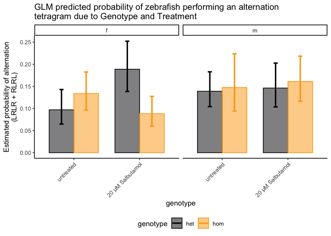 ### bin x Genotype x Treatment While this is not significant, the homs treated with iron appear to be performing more alternations more like their het saline siblings
print(emmeans(glm, ~ genotype * treatment * bin * sex), type = "response") %>%
as_tibble() %>%
mutate(binforvis = case_when(
bin == 1 ~ "0-10 mins",
bin == 2 ~ "10-20 mins",
bin == 3 ~ "20-30 mins",
bin == 4 ~ "30-40 mins",
bin == 5 ~ "40-50 mins",
bin == 6 ~ "50-60 mins"
)) %>%
ggplot(aes(x = binforvis, y = prob, colour = genotype)) +
geom_col(aes(fill = genotype),
alpha = 0.5,
# width = 0.75,
position = position_dodge()
) +
geom_errorbar(aes(ymin = asymp.LCL, ymax = asymp.UCL ),
# width = 0.125,
size = 1,
position = position_dodge()) +
facet_wrap(~sex + treatment, nrow = 1) +
theme(axis.text.x = element_text(hjust = 1,
vjust = 1,
angle = 45),
legend.position = "bottom") +
scale_color_viridis_d(end = 0.8, option = "inferno") +
scale_fill_viridis_d(end = 0.8, option = "inferno") +
labs(y = "Estimated probability of alternation\n(LRLR + RLRL)",
x = "Time interval",
title = "GLM predicted probability of zebrafish performing an alternation\ntetragram due to Genotype and Treatment",
# subtitle = "p = 0.25"
) genotype treatment bin sex prob SE df asymp.LCL asymp.UCL
het untreated 1 f 0.0863 0.0294 Inf 0.0435 0.164
hom untreated 1 f 0.1215 0.0322 Inf 0.0711 0.200
het 20 µM Salbutamol 1 f 0.1427 0.0379 Inf 0.0832 0.234
hom 20 µM Salbutamol 1 f 0.1245 0.0352 Inf 0.0702 0.211
het untreated 2 f 0.0866 0.0311 Inf 0.0421 0.170
hom untreated 2 f 0.1524 0.0407 Inf 0.0884 0.250
het 20 µM Salbutamol 2 f 0.1239 0.0369 Inf 0.0678 0.216
hom 20 µM Salbutamol 2 f 0.1009 0.0306 Inf 0.0548 0.178
het untreated 3 f 0.0848 0.0315 Inf 0.0401 0.170
hom untreated 3 f 0.1514 0.0395 Inf 0.0889 0.246
het 20 µM Salbutamol 3 f 0.1620 0.0439 Inf 0.0931 0.267
hom 20 µM Salbutamol 3 f 0.0652 0.0249 Inf 0.0304 0.134
het untreated 4 f 0.0926 0.0336 Inf 0.0446 0.183
hom untreated 4 f 0.1055 0.0332 Inf 0.0559 0.190
het 20 µM Salbutamol 4 f 0.2374 0.0516 Inf 0.1511 0.352
hom 20 µM Salbutamol 4 f 0.0968 0.0326 Inf 0.0490 0.182
het untreated 5 f 0.1085 0.0376 Inf 0.0537 0.207
hom untreated 5 f 0.1856 0.0450 Inf 0.1128 0.290
het 20 µM Salbutamol 5 f 0.2801 0.0596 Inf 0.1789 0.410
hom 20 µM Salbutamol 5 f 0.0820 0.0291 Inf 0.0401 0.160
het untreated 6 f 0.1294 0.0446 Inf 0.0640 0.244
hom untreated 6 f 0.1018 0.0325 Inf 0.0535 0.185
het 20 µM Salbutamol 6 f 0.2233 0.0512 Inf 0.1389 0.339
hom 20 µM Salbutamol 6 f 0.0717 0.0286 Inf 0.0322 0.152
het untreated 1 m 0.1575 0.0325 Inf 0.1037 0.232
hom untreated 1 m 0.1045 0.0409 Inf 0.0472 0.216
het 20 µM Salbutamol 1 m 0.1162 0.0328 Inf 0.0656 0.197
hom 20 µM Salbutamol 1 m 0.1476 0.0354 Inf 0.0907 0.231
het untreated 2 m 0.1324 0.0325 Inf 0.0806 0.210
hom untreated 2 m 0.1155 0.0415 Inf 0.0556 0.225
het 20 µM Salbutamol 2 m 0.1134 0.0372 Inf 0.0583 0.209
hom 20 µM Salbutamol 2 m 0.1420 0.0374 Inf 0.0831 0.232
het untreated 3 m 0.1354 0.0330 Inf 0.0827 0.214
hom untreated 3 m 0.1497 0.0518 Inf 0.0735 0.281
het 20 µM Salbutamol 3 m 0.1793 0.0485 Inf 0.1028 0.294
hom 20 µM Salbutamol 3 m 0.1428 0.0405 Inf 0.0801 0.242
het untreated 4 m 0.1488 0.0350 Inf 0.0923 0.231
hom untreated 4 m 0.2462 0.0786 Inf 0.1246 0.428
het 20 µM Salbutamol 4 m 0.1705 0.0499 Inf 0.0933 0.291
hom 20 µM Salbutamol 4 m 0.2925 0.0659 Inf 0.1814 0.436
het untreated 5 m 0.1247 0.0324 Inf 0.0738 0.203
hom untreated 5 m 0.2033 0.0667 Inf 0.1022 0.364
het 20 µM Salbutamol 5 m 0.1852 0.0501 Inf 0.1060 0.303
hom 20 µM Salbutamol 5 m 0.1528 0.0446 Inf 0.0840 0.262
het untreated 6 m 0.1370 0.0356 Inf 0.0808 0.223
hom untreated 6 m 0.1067 0.0439 Inf 0.0462 0.227
het 20 µM Salbutamol 6 m 0.1277 0.0433 Inf 0.0640 0.239
hom 20 µM Salbutamol 6 m 0.1230 0.0419 Inf 0.0615 0.231
Results are averaged over the levels of: L_R_bias
Confidence level used: 0.95
Intervals are back-transformed from the logit scale 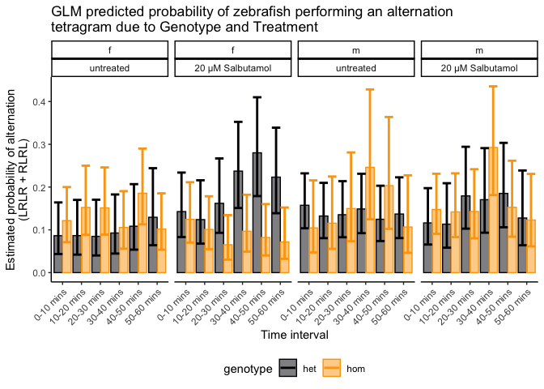
final_data_long %>%
dplyr::distinct(fish_id, bin, .keep_all = T) %>%
mutate(binforvis = case_when(
bin == 1 ~ "0-10 mins",
bin == 2 ~ "10-20 mins",
bin == 3 ~ "20-30 mins",
bin == 4 ~ "30-40 mins",
bin == 5 ~ "40-50 mins",
bin == 6 ~ "50-60 mins"
)) %>%
ggplot(aes(x = treatment, y = rel_alts)) +
geom_boxplot(outlier.shape = NA,
aes(fill = genotype),
alpha = 0.5) +
geom_point(aes(colour = genotype),
position = position_jitterdodge()) +
facet_wrap(~binforvis, nrow = 1) +
theme(axis.text.x = element_text(angle = 45, hjust = 1, vjust = 1),
legend.position = "bottom") +
ylab("Relative number of alternation tetragrams\n(LRLR + RLRL) / total_turns") +
scale_colour_viridis_d(end = 0.75) +
scale_fill_viridis_d(end = 0.75) Finally, I will now test for alternation changes using a generalised linear mixed effect model (beta-binomial distribution). We use this because it is count data which is over-dispersed, and fixed and random effects are included. The link function is logit. No significant effects are observed on working memory. Only the L_R_bias term is significant, this is to be expected, as they would probably be performing more repitiions. The bin:Genotype effect is close (ish) to statistical significance. Meaning that this might have something there. but this does not take into account the Treatment group.
Note that I have ignored the effect of Sex here. We have never really seen a Sex effect in all of our ymaze analyses.
glm.reps <-
final_data %>%
left_join(LR_Bias) %>%
mutate(
non_reps = total_turns - reps,
bin = as.factor(bin)
) %>%
glmmTMB(
cbind(reps, non_reps) ~ (bin + genotype + treatment + sex)^3 + L_R_bias + (1|behavBatch) + (1|fish_id),
family = betabinomial(),
data = .
)
Anova(glm.reps) %>%
as.data.frame() %>%
dplyr::rename(pval = `Pr(>Chisq)`) %>%
kable() %>%
kable_styling(full_width = FALSE) %>%
row_spec(row = 4, bold = TRUE)| Chisq | Df | pval | |
|---|---|---|---|
| bin | 7.4832082 | 5 | 0.1871112 |
| genotype | 0.1168898 | 1 | 0.7324325 |
| treatment | 1.2833065 | 1 | 0.2572852 |
| sex | 2.8059916 | 1 | 0.0939128 |
| L_R_bias | 23.4437865 | 2 | 0.0000081 |
| bin:genotype | 3.2076314 | 5 | 0.6680102 |
| bin:treatment | 2.7014767 | 5 | 0.7458926 |
| bin:sex | 4.2856237 | 5 | 0.5090677 |
| genotype:treatment | 1.9006872 | 1 | 0.1680014 |
| genotype:sex | 0.4306619 | 1 | 0.5116644 |
| treatment:sex | 2.2872288 | 1 | 0.1304426 |
| bin:genotype:treatment | 3.6928191 | 5 | 0.5944330 |
| bin:genotype:sex | 0.5873177 | 5 | 0.9885765 |
| bin:treatment:sex | 3.5680422 | 5 | 0.6131179 |
| genotype:treatment:sex | 3.3328286 | 1 | 0.0679100 |
The effect of genotype x treatment is not too far off statistical significance (p = 0.17) and is trending towards a rescue.
print(emmeans(glm.reps, ~ genotype * treatment * sex), type = "response") %>%
as_tibble() %>%
ggplot(aes(x = treatment, y = prob, colour = genotype)) +
geom_col(aes(fill = genotype),
alpha = 0.5,
width = 0.75,
position = position_dodge()) +
geom_errorbar(aes(ymin = asymp.LCL, ymax = asymp.UCL ),
width = 0.125,
size = 1,
position = position_dodge(width = 0.75)) +
facet_wrap(~sex ) +
theme(axis.text.x = element_text(hjust = 1,
vjust = 1,
angle = 45),
legend.position = "bottom") +
scale_color_viridis_d(end = 0.8, option = "inferno") +
scale_fill_viridis_d(end = 0.8, option = "inferno") +
labs(y = "Estimated probability of alternation\n(LRLR + RLRL)",
x = "genotype",
title = "GLM predicted probability of zebrafish performing an alternation\ntetragram due to Genotype and Treatment"
) genotype treatment sex prob SE df asymp.LCL asymp.UCL
het untreated f 0.229 0.0356 Inf 0.1670 0.306
hom untreated f 0.174 0.0277 Inf 0.1260 0.235
het 20 µM Salbutamol f 0.167 0.0277 Inf 0.1198 0.229
hom 20 µM Salbutamol f 0.261 0.0356 Inf 0.1974 0.337
het untreated m 0.205 0.0269 Inf 0.1571 0.263
hom untreated m 0.201 0.0390 Inf 0.1355 0.289
het 20 µM Salbutamol m 0.152 0.0286 Inf 0.1035 0.217
hom 20 µM Salbutamol m 0.136 0.0249 Inf 0.0945 0.193
Results are averaged over the levels of: bin, L_R_bias
Confidence level used: 0.95
Intervals are back-transformed from the logit scale 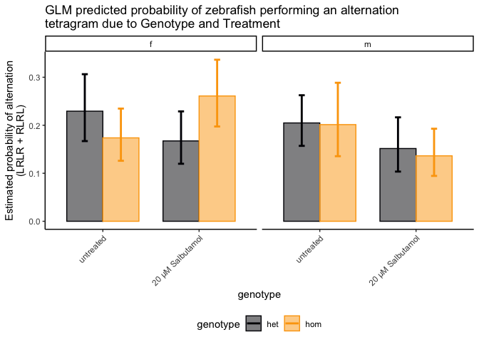
#em. <- emmeans(glm, list(pairwise ~ genotype * treatment), response)
#em$`pairwise differences of genotype, treatment`While this is not significant, the homs treated with iron appear to be performing more alternations more like their het saline siblings
print(emmeans(glm.reps, ~ genotype * treatment * bin * sex), type = "response") %>%
as_tibble() %>%
mutate(binforvis = case_when(
bin == 1 ~ "0-10 mins",
bin == 2 ~ "10-20 mins",
bin == 3 ~ "20-30 mins",
bin == 4 ~ "30-40 mins",
bin == 5 ~ "40-50 mins",
bin == 6 ~ "50-60 mins"
)) %>%
ggplot(aes(x = binforvis, y = prob, colour = genotype)) +
geom_col(aes(fill = genotype),
alpha = 0.5,
# width = 0.75,
position = position_dodge()) +
geom_errorbar(aes(ymin = asymp.LCL, ymax = asymp.UCL ),
# width = 0.125,
size = 1,
position = position_dodge()) +
facet_wrap(~sex+treatment, nrow = 1) +
theme(axis.text.x = element_text(hjust = 1,
vjust = 1,
angle = 45),
legend.position = "bottom") +
scale_color_viridis_d(end = 0.8, option = "inferno") +
scale_fill_viridis_d(end = 0.8, option = "inferno") +
labs(y = "Estimated probability of alternation\n(LRLR + RLRL)",
x = "Time interval",
title = "GLM predicted probability of zebrafish performing an alternation\ntetragram due to Genotype and Treatment",
subtitle = "p = 0.25"
) genotype treatment bin sex prob SE df asymp.LCL asymp.UCL
het untreated 1 f 0.2006 0.0527 Inf 0.1164 0.323
hom untreated 1 f 0.2370 0.0512 Inf 0.1513 0.351
het 20 µM Salbutamol 1 f 0.1414 0.0428 Inf 0.0762 0.247
hom 20 µM Salbutamol 1 f 0.2155 0.0520 Inf 0.1307 0.334
het untreated 2 f 0.2309 0.0573 Inf 0.1376 0.361
hom untreated 2 f 0.1348 0.0436 Inf 0.0697 0.245
het 20 µM Salbutamol 2 f 0.2277 0.0546 Inf 0.1382 0.351
hom 20 µM Salbutamol 2 f 0.3023 0.0608 Inf 0.1975 0.433
het untreated 3 f 0.2838 0.0659 Inf 0.1735 0.428
hom untreated 3 f 0.1777 0.0486 Inf 0.1012 0.293
het 20 µM Salbutamol 3 f 0.2014 0.0506 Inf 0.1198 0.318
hom 20 µM Salbutamol 3 f 0.2909 0.0601 Inf 0.1881 0.421
het untreated 4 f 0.2221 0.0617 Inf 0.1242 0.365
hom untreated 4 f 0.1449 0.0442 Inf 0.0777 0.254
het 20 µM Salbutamol 4 f 0.1471 0.0416 Inf 0.0826 0.248
hom 20 µM Salbutamol 4 f 0.2686 0.0637 Inf 0.1629 0.409
het untreated 5 f 0.2102 0.0614 Inf 0.1142 0.355
hom untreated 5 f 0.1264 0.0385 Inf 0.0681 0.223
het 20 µM Salbutamol 5 f 0.1553 0.0438 Inf 0.0871 0.261
hom 20 µM Salbutamol 5 f 0.2496 0.0599 Inf 0.1509 0.384
het untreated 6 f 0.2346 0.0633 Inf 0.1331 0.380
hom untreated 6 f 0.2523 0.0585 Inf 0.1553 0.383
het 20 µM Salbutamol 6 f 0.1453 0.0429 Inf 0.0795 0.251
hom 20 µM Salbutamol 6 f 0.2457 0.0612 Inf 0.1456 0.384
het untreated 1 m 0.1694 0.0392 Inf 0.1056 0.260
hom untreated 1 m 0.2257 0.0593 Inf 0.1303 0.362
het 20 µM Salbutamol 1 m 0.1842 0.0443 Inf 0.1125 0.287
hom 20 µM Salbutamol 1 m 0.1364 0.0384 Inf 0.0769 0.230
het untreated 2 m 0.2748 0.0530 Inf 0.1837 0.390
hom untreated 2 m 0.2457 0.0681 Inf 0.1369 0.401
het 20 µM Salbutamol 2 m 0.1716 0.0494 Inf 0.0950 0.290
hom 20 µM Salbutamol 2 m 0.1548 0.0442 Inf 0.0863 0.262
het untreated 3 m 0.2053 0.0462 Inf 0.1292 0.310
hom untreated 3 m 0.1791 0.0589 Inf 0.0904 0.324
het 20 µM Salbutamol 3 m 0.1416 0.0468 Inf 0.0719 0.260
hom 20 µM Salbutamol 3 m 0.1310 0.0449 Inf 0.0651 0.246
het untreated 4 m 0.1704 0.0426 Inf 0.1022 0.270
hom untreated 4 m 0.1202 0.0538 Inf 0.0480 0.270
het 20 µM Salbutamol 4 m 0.1010 0.0409 Inf 0.0444 0.214
hom 20 µM Salbutamol 4 m 0.0886 0.0360 Inf 0.0390 0.189
het untreated 5 m 0.2049 0.0451 Inf 0.1303 0.307
hom untreated 5 m 0.1730 0.0707 Inf 0.0735 0.355
het 20 µM Salbutamol 5 m 0.1648 0.0548 Inf 0.0830 0.301
hom 20 µM Salbutamol 5 m 0.1622 0.0477 Inf 0.0887 0.278
het untreated 6 m 0.2165 0.0479 Inf 0.1372 0.325
hom untreated 6 m 0.3029 0.0814 Inf 0.1695 0.481
het 20 µM Salbutamol 6 m 0.1595 0.0556 Inf 0.0777 0.300
hom 20 µM Salbutamol 6 m 0.1587 0.0507 Inf 0.0822 0.284
Results are averaged over the levels of: L_R_bias
Confidence level used: 0.95
Intervals are back-transformed from the logit scale 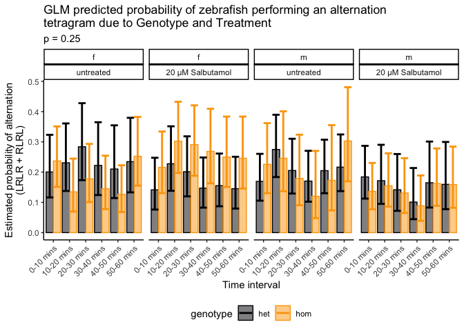
tbc
final_data %>%
saveRDS("data/R_objects/tetras-exp1-2.rds")
distancess %>%
saveRDS("data/R_objects/distance_data-exp1-2.rds")
sessionInfo()R version 4.2.3 (2023-03-15)
Platform: x86_64-apple-darwin17.0 (64-bit)
Running under: macOS Catalina 10.15.7
Matrix products: default
BLAS: /Library/Frameworks/R.framework/Versions/4.2/Resources/lib/libRblas.0.dylib
LAPACK: /Library/Frameworks/R.framework/Versions/4.2/Resources/lib/libRlapack.dylib
locale:
[1] en_AU.UTF-8/en_AU.UTF-8/en_AU.UTF-8/C/en_AU.UTF-8/en_AU.UTF-8
attached base packages:
[1] stats graphics grDevices utils datasets methods base
other attached packages:
[1] MASS_7.3-60 glmmTMB_1.1.7 emmeans_1.8.6 car_3.1-2
[5] carData_3.0-5 performance_0.10.3 lme4_1.1-33 Matrix_1.5-4
[9] broom_1.0.4 kableExtra_1.3.4 ggrepel_0.9.3 ggforce_0.4.1
[13] ggbeeswarm_0.7.2 ggfortify_0.4.16 ggeasy_0.1.4 ggpubr_0.6.0
[17] scales_1.2.1 magrittr_2.0.3 here_1.0.1 readxl_1.4.2
[21] lubridate_1.9.2 forcats_1.0.0 stringr_1.5.0 dplyr_1.1.2
[25] purrr_1.0.1 readr_2.1.4 tidyr_1.3.0 tibble_3.2.1
[29] ggplot2_3.4.2 tidyverse_2.0.0 workflowr_1.7.0
loaded via a namespace (and not attached):
[1] TH.data_1.1-2 minqa_1.2.5 colorspace_2.1-0
[4] ggsignif_0.6.4 rprojroot_2.0.3 estimability_1.4.1
[7] fs_1.6.2 rstudioapi_0.14 farver_2.1.1
[10] bit64_4.0.5 fansi_1.0.4 mvtnorm_1.1-3
[13] xml2_1.3.4 codetools_0.2-19 splines_4.2.3
[16] cachem_1.0.8 knitr_1.42 polyclip_1.10-4
[19] jsonlite_1.8.4 nloptr_2.0.3 pbkrtest_0.5.2
[22] compiler_4.2.3 httr_1.4.6 backports_1.4.1
[25] fastmap_1.1.1 cli_3.6.1 later_1.3.1
[28] tweenr_2.0.2 htmltools_0.5.5 tools_4.2.3
[31] coda_0.19-4 gtable_0.3.3 glue_1.6.2
[34] Rcpp_1.0.10 cellranger_1.1.0 jquerylib_0.1.4
[37] vctrs_0.6.2 svglite_2.1.1 nlme_3.1-162
[40] insight_0.19.1 xfun_0.39 ps_1.7.5
[43] rvest_1.0.3 timechange_0.2.0 lifecycle_1.0.3
[46] rstatix_0.7.2 getPass_0.2-2 zoo_1.8-12
[49] vroom_1.6.3 hms_1.1.3 promises_1.2.0.1
[52] parallel_4.2.3 sandwich_3.0-2 TMB_1.9.4
[55] yaml_2.3.7 see_0.7.5 gridExtra_2.3
[58] sass_0.4.6 stringi_1.7.12 bayestestR_0.13.1
[61] highr_0.10 boot_1.3-28.1 rlang_1.1.1
[64] pkgconfig_2.0.3 systemfonts_1.0.4 evaluate_0.21
[67] lattice_0.21-8 patchwork_1.1.2 labeling_0.4.2
[70] bit_4.0.5 processx_3.8.1 tidyselect_1.2.0
[73] R6_2.5.1 generics_0.1.3 multcomp_1.4-23
[76] mgcv_1.8-42 pillar_1.9.0 whisker_0.4.1
[79] withr_2.5.0 datawizard_0.7.1 survival_3.5-5
[82] abind_1.4-5 crayon_1.5.2 utf8_1.2.3
[85] tzdb_0.3.0 rmarkdown_2.21 grid_4.2.3
[88] callr_3.7.3 git2r_0.32.0 digest_0.6.31
[91] webshot_0.5.4 xtable_1.8-4 numDeriv_2016.8-1.1
[94] httpuv_1.6.10 munsell_0.5.0 beeswarm_0.4.0
[97] viridisLite_0.4.2 vipor_0.4.5 bslib_0.4.2